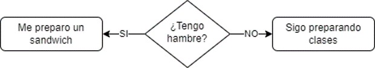

- 1
- Aquí pedimos un numero al usuario
- 2
- Comparamos si el valor es mayor a 10
- 3
- Comparamos ahora si es menor a 10
- 4
- Comparamos si esta dentro del rango que pedimos
TICS100 - Programación
Condicionales
Diego Ramos Á.
Condicionales
Hora de tomar apuntes (if - elif- else)
Caracteristicas
Muchas veces queremos tomar decisiones en función de lo que está ocurriendo.

A esto le llamamos condicionales
¿Cómo lo programamos?
En inglés existe la palabra if que se traduce literalmente como ‘si…’
Por lo tanto si queremos hacer una condición sería de la siguiente forma:
Veamos los detalles
En el caso que queramos hacer una condición tenemos varios elementos que fijarnos:
Primero tiene que ir el if para avisar que es una condición lo que tenemos
Vemos como la condición está entre paréntesis
Luego van unos 2 puntos para advertir a la máquina que lo que esta indentado (se hace con el boton tab) abajo va dentro de la condición
Después de la condición
Cuando ya tenemos listo nuestra condición, simplemente sacando el tab podemos ejecutar otra parte del codigo sin que afecte
En este caso cada if se ejecutará independiente al otro
Algunas condiciones para saber
Los simbolos de condicionales que deben saber son los siguientes (de derecha a izquierda):
- “
==”: es para verificar si son valores iguales - “
!=”: es para verificar que son distintos - “
>=”: es para verificar si es menor o igual que… - “
<=”: es para verificar si es mayor o igual que… - “
>”: es para verificar si es menor que… - “
<”: es para verificar si es mayor que…
El simbolo = es para asignar un valor.
En caso de no cumplir la condición
En un inicio vimos solo condiciones if, pero no es comodo colocar cada condición en particular.
Cuando NO se cumple la condición que propusimos, también podemos ejecutar ciertas lineas de código.
Esto se hace con
else.elsese traduce como “si no”:
Ejemplo else
¿Cómo podemos hacer el código más eficiente todavía?
Hay un condicional intermedio, existe el elif que es la combinación de else con if. En palabras sencillas, se utiliza para agregar una nueva condición cuando la primera condición no se cumple.
Ejemplo
Si reescribimos el ejemplo anterior:
- 1
- Aquí pedimos un numero al usuario
- 2
- Comparamos si el valor es mayor a 10
- 3
- Comparamos ahora si es menor a 10
- 4
- Caso contrario el numero es correcto
Actividad
Hagan un código que pregunte la edad y categorice en:
- Niño
- Adulto
- Adulto mayor
and y or
Dentro de un if podemos tener múltiples condiciones. Para esto usamos and y or.
and: Cuando queremos que se cumplan todas las condiciones.or: Cuando queremos que se cumpla mínimo una de las condiciones.
Ejemplo and
Primero: ¿Cómo pondrían la condición: número mayor que 3, menor que 12 y que sea par?
Segundo: ¿Cómo pondrían la condición: mayor 15 o par? (O sea, si cumple que es mayor a 15 o par o ambas).
Vayamos a replit
not
El not se usa para hacer que una condición sea su contrario.
Es decir, si una condición nos indicaba los pares, ahora nos indica los impares
Ejemplo not
Queremos revisar si es mayor de 18 y NO ha sido bloqueado.
Complejicemos la cosa (anidemos condiciones)
Olvidemos el elif de momento
Anidar if-else nos permite acceder a lógica más compleja.
Consiste en poner un if-else dentro de otro para manejar múltiples condiciones.
Con esto podemos trabajar múltiples variables al mismo tiempo de forma más lógica.
Ejemplo anidado
¿Que pasa si hay descuento por tramo de edad, solo si compra más de 100 unidades?
Cuidado con la identación
Es una confusión normal, por lo que tienen que estar atentos.
Ejemplo de control
El siguiente código solicita las notas de dos pruebas, calcula el promedio y luego despliega 3 mensajes distintos dependiendo del promedio: “Felicitaciones, vas camino a aprobar” (si el promedio es mayor o igual a 4.0); “Atención, vas camino a reprobar” (promedio mayor o igual a 3.0 pero menor a 4.0) y “Pocas posibilidades de aprobar” (para promedio menor a 3.0). Sin embargo, tiene errores. Corrija el código
print("la nota 1")
nota1 = int(input())
print("la nota 2")
nota2 = input()
promedio = (nota1 * nota2) / 2
print ("tu promedio es ",promedio)
if (promedio>=4.0):
print ( "Felicitaciones, vas camino a aprobar" )
else:
if ( promedio>=3.0 ):
print( "Atención: camino a reprobar" )
else:
print( "Pocas posibilidades de aprobar" ) Ejercicio de programación
Calculadora de Envío
Crea un programa que simule una calculadora de envío para una tienda en línea. El programa debe solicitar al usuario la cantidad total de productos en su carrito y su ubicación de envío. Basado en estos datos, calcula el costo de envío de acuerdo a las siguientes reglas:
- Si la cantidad de productos es menor o igual a 10, el costo de envío es $5.
- Si la cantidad de productos es mayor a 10 y menor o igual a 20, el costo de envío es $10.
- Si la cantidad de productos es mayor a 20, el costo de envío es $15.
- Adicionalmente, si la ubicación de envío es internacional, agrega un costo adicional de $20 al costo de envío calculado anteriormente.